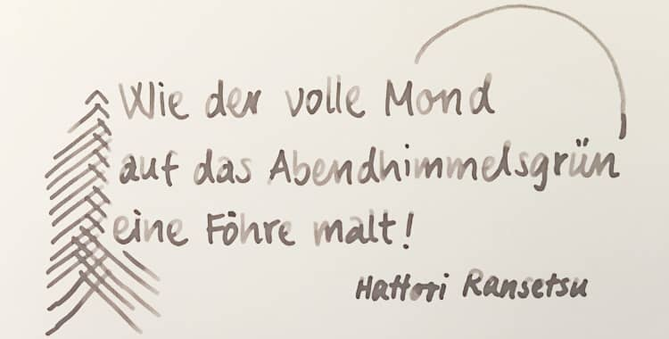

@charak
@charakAus 17 Silben ein Gedicht
Aus der Bibliothek habe ich mir gerade zwei kleine, hübsche Bücher mit japanischen Kurzgedichten ausgeliehen. Diese Haiku haben sich im 14./15. Jahrhundert entwickelt. Ihre Kürze ist typisch für die japanische Kultur, die ja in vielen Bereichen versucht, vollendet Schönes mit geringen Mitteln und auf kleinem Raum zu schaffen (wie bei der Tuschemalerei Sumi-e, der Blumensteckkunst Ikebana oder kleinen, geschnitzten Netsuke).
Ein Haiku spielt mit dem Unausgesprochenen und Unvollendeten, und deutet über den eigentlichen Inhalt hinaus ein größeres Thema an. Im strengen Sinn beschreiben Haiku objektiv eine Naturstimmung und orientieren sich an den fünf Jahreszeiten (Neujahr, Frühling, Sommer, Herbst und Winter):
Kaum war er erblüht,
hat den Mohn der Wind verweht,
noch am gleichen Tag!— Kobayashi Issa
Thematisch sind die Kurzgedichte spätestens zu ihrer Blütezeit im 17. Jahrhundert vielseitiger geworden, ihre feste Form hat sich allerdings nicht verändert: Ein Haiku hat immer drei Zeilen mit bestimmter Silbenzahl. Zuerst fünf Silben, dann sieben Silben, schließlich wieder fünf Silben.
Laut Gerolf Coudenhove, dem Übersetzer und Herausgeber der Haiku-Bücher, haben die Kurzgedichte im Japanischen außerdem einen typischen Rhythmus. Sie werden auch bewusst rhythmisch vorgelesen. Ins Deutsche lässt sich das am besten mit einem Wechsel von betonten (—) und unbetonten Silben (◡) übertragen:
— ◡ — ◡ —
— ◡ — ◡ — ◡ —
— ◡ — ◡ —
Haiku zu schreiben ist wirklich weit verbreitet, es gibt Millionen davon! Ich erinnere mich an eine Deutschstunde, in der wir diese Gedichtform selbst ausprobiert haben. Die kurze, fest Form finde ich sehr inspirierend: Sie beschränkt die Möglichkeiten, regt an zu Worttüffteleien und verhindert gleichzeitig, dass man sich in ausufernder Weitschweifigkeit verläuft. Hier ein eigenes Haiku:
In dem dicken Buch
zwischen schwerer Weisheit klebt
flach ein Käferrest.
Mir gefällt, wie die nüchterne, kurze Beschreibung Raum lässt für hintergründige Interpretationen. Es macht mir außerdem Freude, einen kleinen, konkreten Moment im Vers festzuhalten und zu versuchen, die Stimmung in wenigen Worten einzufangen.
Wegen ihrer Kürze eignen sich Haiku wunderbar als Texte für Kalligrafie. Sie sind schnell geschrieben, lassen sich mit ihren bildhaften Beschreibungen leicht gestalten und machen durch die lyrische Form auch inhaltlich etwas her. Wie wäre es zum Beispiel auf einer handgeschriebenen Grußkarte?

Ich hoffe, dieser Blogartikel regt euch an, ein paar Haiku zu lesen und vielleicht sogar selbst eines zu schreiben. Es ist wirklich nicht so schwer!
Update 22.9.2025: In ihrer Dissertation „Das deutsche Kurzgedicht in der Tradition japanischer Gedichtformen“ (1987) weist Margret Buerschaper auf einige weitere Merkmale hin, die für ein traditionelles Haiku nötig sind (v. a. S. 148ff): Eine gewisse Unbestimmtheit, die beim Lesen mit eigenen Erfahrungen ergänzt werden soll; ein Jahreszeitenwort, welches das Haiku zeitlich zuordnet; kein direktes Auftreten des Autors (Verzicht auf „ich/mein“); eine bildhafte Momentaufnahme, die auf eine tiefere Einsicht hindeutet.